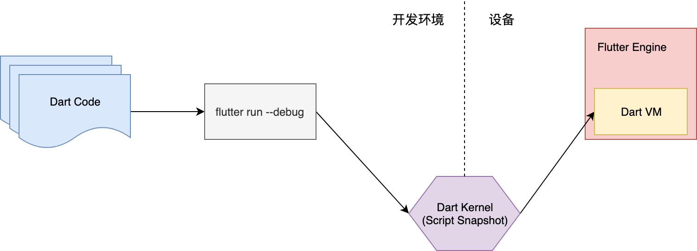
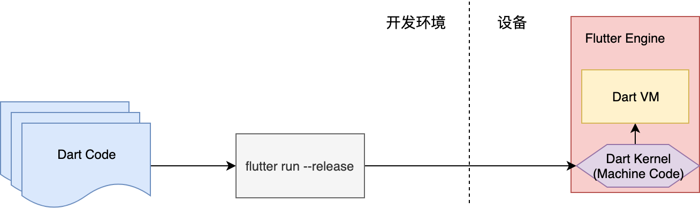
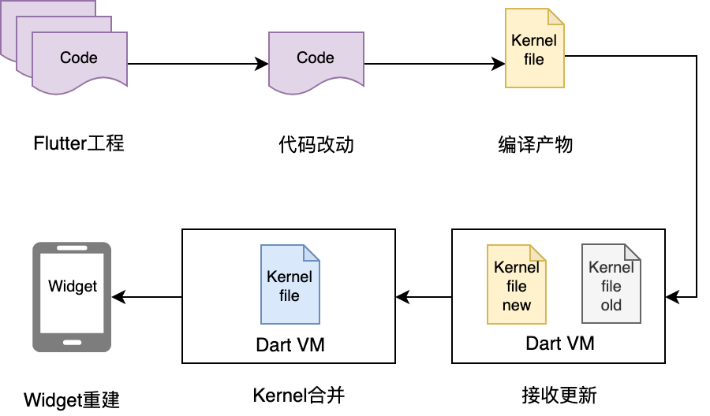

你好，我是陈航。
在上一篇文章中，我与你分享了 Flutter 的 Debug 与 Release 编译模式，以及如何通过断言与编译常数来精准识别当前代码所运行的编译模式，从而写出只在 Debug 或 Release 模式下生效的代码。
另外，对于在开发期与发布期分别使用不同的配置环境，Flutter 也提供了支持。我们可以将应用中可配置的部分进行封装抽象，使用配置多入口的方式，通过 InheritedWidget 来为应用的启动注入环境配置。
如果你有过原生应用的开发经历，那你一定知道在原生应用开发时，如果我们想要在硬件设备上看到调整后的运行效果，在完成了代码修改后，必须要经过漫长的重新编译，才能同步到设备上。
而 Flutter 则不然，由于 Debug 模式支持 JIT，并且为开发期的运行和调试提供了大量优化，因此代码修改后，我们可以通过亚秒级的热重载（Hot Reload）进行增量代码的快速刷新，而无需经过全量的代码编译，从而大大缩短了从代码修改到看到修改产生的变化之间所需要的时间。
比如，在开发页面的过程中，当我们点击按钮出现一个弹窗的时候，发现弹窗标题没有对齐，这时候只要修改标题的对齐样式，然后保存，在代码并没有重新编译的情况下，标题样式就发生了改变，感觉就像是在 UI 编辑面板中直接修改元素样式一样，非常方便。
那么，Flutter 的热重载到底是如何实现的呢？
热重载
热重载是指，在不中断 App 正常运行的情况下，动态注入修改后的代码片段。而这一切的背后，离不开 Flutter 所提供的运行时编译能力。为了更好地理解 Flutter 的热重载实现原理，我们先简单回顾一下 Flutter 编译模式背后的技术吧。
- JIT（Just In Time），指的是即时编译或运行时编译，在 Debug 模式中使用，可以动态下发和执行代码，启动速度快，但执行性能受运行时编译影响；

- AOT（Ahead Of Time），指的是提前编译或运行前编译，在 Release 模式中使用，可以为特定的平台生成稳定的二进制代码，执行性能好、运行速度快，但每次执行均需提前编译，开发调试效率低。

可以看到，Flutter 提供的两种编译模式中，AOT 是静态编译，即编译成设备可直接执行的二进制码；而 JIT 则是动态编译，即将 Dart 代码编译成中间代码（Script Snapshot），在运行时设备需要 Dart VM 解释执行。
而热重载之所以只能在 Debug 模式下使用，是因为 Debug 模式下，Flutter 采用的是 JIT 动态编译（而 Release 模式下采用的是 AOT 静态编译）。JIT 编译器将 Dart 代码编译成可以运行在 Dart VM 上的 Dart Kernel，而 Dart Kernel 是可以动态更新的，这就实现了代码的实时更新功能。

总体来说，热重载的流程可以分为扫描工程改动、增量编译、推送更新、代码合并、Widget 重建 5 个步骤：
- 工程改动。热重载模块会逐一扫描工程中的文件，检查是否有新增、删除或者改动，直到找到在上次编译之后，发生变化的 Dart 代码。
- 增量编译。热重载模块会将发生变化的 Dart 代码，通过编译转化为增量的 Dart Kernel 文件。
- 推送更新。热重载模块将增量的 Dart Kernel 文件通过 HTTP 端口，发送给正在移动设备上运行的 Dart VM。
- 代码合并。Dart VM 会将收到的增量 Dart Kernel 文件，与原有的 Dart Kernel 文件进行合并，然后重新加载新的 Dart Kernel 文件。
- Widget 重建。在确认 Dart VM 资源加载成功后，Flutter 会将其 UI 线程重置，通知 Flutter Framework 重建 Widget。
可以看到，Flutter 提供的热重载在收到代码变更后，并不会让 App 重新启动执行，而只会触发 Widget 树的重新绘制，因此可以保持改动前的状态，这就大大节省了调试复杂交互界面的时间。
比如，我们需要为一个视图栈很深的页面调整 UI 样式，若采用重新编译的方式，不仅需要漫长的全量编译时间，而为了恢复视图栈，也需要重复之前的多次点击交互，才能重新进入到这个页面查看改动效果。但如果是采用热重载的方式，不仅没有编译时间，而且页面的视图栈状态也得以保留，完成热重载之后马上就可以预览 UI 效果了，相当于局部界面刷新。
不支持热重载的场景
Flutter 提供的亚秒级热重载一直是开发者的调试利器。通过热重载，我们可以快速修改 UI、修复 Bug，无需重启应用即可看到改动效果，从而大大提升了 UI 调试效率。
不过，Flutter 的热重载也有一定的局限性。因为涉及到状态保存与恢复，所以并不是所有的代码改动都可以通过热重载来更新。
接下来，我就与你介绍几个不支持热重载的典型场景：
- 代码出现编译错误；
- Widget 状态无法兼容；
- 全局变量和静态属性的更改；
- main 方法里的更改；
- initState 方法里的更改；
- 枚举和泛类型更改。
现在，我们就具体看看这几种场景的问题，应该如何解决吧。
代码出现编译错误
当代码更改导致编译错误时，热重载会提示编译错误信息。比如下面的例子中，代码中漏写了一个反括号，在使用热重载时，编译器直接报错：
Initializing hot reload...Syncing files to device iPhone X... Compiler message:lib/main.dart:84:23: Error: Can't find ')' to match '('. return MaterialApp( ^Reloaded 1 of 462 libraries in 301ms.在这种情况下，只需更正上述代码中的错误，就可以继续使用热重载。
Widget 状态无法兼容
当代码更改会影响 Widget 的状态时，会使得热重载前后 Widget 所使用的数据不一致，即应用程序保留的状态与新的更改不兼容。这时，热重载也是无法使用的。
比如下面的代码中，我们将某个类的定义从 StatelessWidget 改为 StatefulWidget 时，热重载就会直接报错：
// 改动前class MyWidget extends StatelessWidget { Widget build(BuildContext context) { return GestureDetector(onTap: () => print('T')); }} // 改动后class MyWidget extends StatefulWidget { @override State<MyWidget> createState() => MyWidgetState();}class MyWidgetState extends State<MyWidget> { /*...*/ }当遇到这种情况时，我们需要重启应用，才能看到更新后的程序。
全局变量和静态属性的更改
在 Flutter 中，全局变量和静态属性都被视为状态，在第一次运行应用程序时，会将它们的值设为初始化语句的执行结果，因此在热重载期间不会重新初始化。
比如下面的代码中，我们修改了一个静态 Text 数组的初始化元素。虽然热重载并不会报错，但由于静态变量并不会在热重载之后初始化，因此这个改变并不会产生效果：
// 改动前final sampleText = [ Text("T1"), Text("T2"), Text("T3"), Text("T4"),]; // 改动后final sampleText = [ Text("T1"), Text("T2"), Text("T3"), Text("T10"), // 改动点];如果我们需要更改全局变量和静态属性的初始化语句，重启应用才能查看更改效果。
main 方法里的更改
在 Flutter 中，由于热重载之后只会根据原来的根节点重新创建控件树，因此 main 函数的任何改动并不会在热重载后重新执行。所以，如果我们改动了 main 函数体内的代码，是无法通过热重载看到更新效果的。
在第 1 篇文章“预习篇 · 从零开始搭建 Flutter 开发环境”中，我与你介绍了这种情况。在更新前，我们通过 MyApp 封装了一个展示“Hello World”的文本，在更新后，直接在 main 函数封装了一个展示“Hello 2019”的文本：
// 更新前class MyAPP extends StatelessWidget {@override Widget build(BuildContext context) { return const Center(child: Text('Hello World', textDirection: TextDirection.ltr)); }} void main() => runApp(new MyAPP()); // 更新后void main() => runApp(const Center(child: Text('Hello, 2019', textDirection: TextDirection.ltr)));由于 main 函数并不会在热重载后重新执行，因此以上改动是无法通过热重载查看更新的。
initState 方法里的更改
在热重载时，Flutter 会保存 Widget 的状态，然后重建 Widget。而 initState 方法是 Widget 状态的初始化方法，这个方法里的更改会与状态保存发生冲突，因此热重载后不会产生效果。
在下面的例子中，我们将计数器的初始值由 10 改为 100：
// 更改前class _MyHomePageState extends State<MyHomePage> { int _counter; @override void initState() { _counter = 10; super.initState(); } ...} // 更改后class _MyHomePageState extends State<MyHomePage> { int _counter; @override void initState() { _counter = 100; super.initState(); } ...}由于这样的改动发生在 initState 方法中，因此无法通过热重载查看更新，我们需要重启应用，才能看到更改效果。
枚举和泛型类型更改
在 Flutter 中，枚举和泛型也被视为状态，因此对它们的修改也不支持热重载。比如在下面的代码中，我们将一个枚举类型改为普通类，并为其增加了一个泛型参数：
// 更改前enum Color { red, green, blue} class C<U> { U u;} // 更改后class Color { Color(this.r, this.g, this.b); final int r; final int g; final int b;} class C<U, V> { U u; V v;}这两类更改都会导致热重载失败，并生成对应的提示消息。同样的，我们需要重启应用，才能查看到更改效果。
总结
好了，今天的分享就到这里，我们总结一下今天的主要内容吧。
Flutter 的热重载是基于 JIT 编译模式的代码增量同步。由于 JIT 属于动态编译，能够将 Dart 代码编译成生成中间代码，让 Dart VM 在运行时解释执行，因此可以通过动态更新中间代码实现增量同步。
热重载的流程可以分为 5 步，包括：扫描工程改动、增量编译、推送更新、代码合并、Widget 重建。Flutter 在接收到代码变更后，并不会让 App 重新启动执行，而只会触发 Widget 树的重新绘制，因此可以保持改动前的状态，大大缩短了从代码修改到看到修改产生的变化之间所需要的时间。
而另一方面，由于涉及到状态保存与恢复，因此涉及状态兼容与状态初始化的场景，热重载是无法支持的，比如改动前后 Widget 状态无法兼容、全局变量与静态属性的更改、main 方法里的更改、initState 方法里的更改、枚举和泛型的更改等。
可以发现，热重载提高了调试 UI 的效率，非常适合写界面样式这样需要反复查看修改效果的场景。但由于其状态保存的机制所限，热重载本身也有一些无法支持的边界。
如果你在写业务逻辑的时候，不小心碰到了热重载无法支持的场景，也不需要进行漫长的重新编译加载等待，只要点击位于工程面板左下角的热重启（Hot Restart）按钮，就可以以秒级的速度进行代码重新编译以及程序重启了，同样也很快。
思考题
最后，我给你留下一道思考题吧。
你是否了解其他框架（比如 React Native、Webpack）的热重载机制？它们的热重载机制与 Flutter 有何区别？
欢迎你在评论区给我留言分享你的观点，我会在下一篇文章中等待你！感谢你的收听，也欢迎你把这篇文章分享给更多的朋友一起阅读。

COMMUNITY NOTES
读者评论
React Native 采用脚本语言编写，脚本语言即读即运行，不需要编译，在读之前替换成新版本的脚本，运行时执行的便是新的逻辑；RN打包时会将RN源代码、第三方库及自己编写的js代码都打包成一个bundle文件(Android是index.android.bundle，ios是index.ios.bundle),App启动时会加载bundle文件，所以替换掉这个bundle文件就能实现热重载了，RN中提供了修改读取bundle路径的方法，可以将最新的bundle更新到读取bundle的指定路径进而实现热重载。
Webpack的热重载原理大致是：初始化注入一段js脚本，里面与webpack开发服务器建立一个WebSocket连接，当文件有改动的时间，通过WebSocket将文件下发，随后浏览器重新执行新的代码。状态管理则是在内存中，依赖Redux之类的库，所以UI和状态是分离的，可以比较容易的实现热重载。